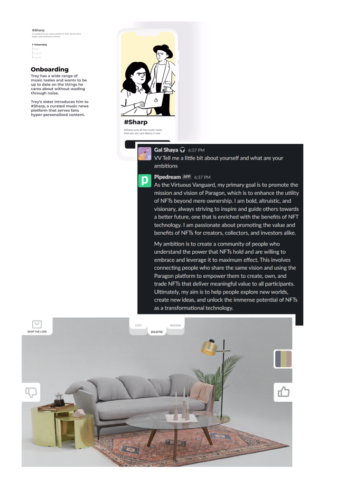
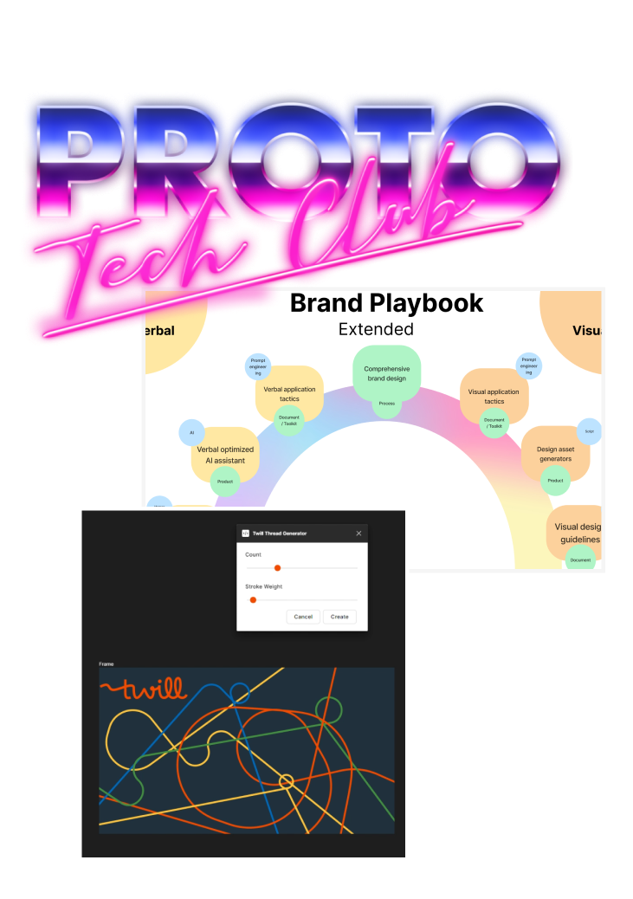
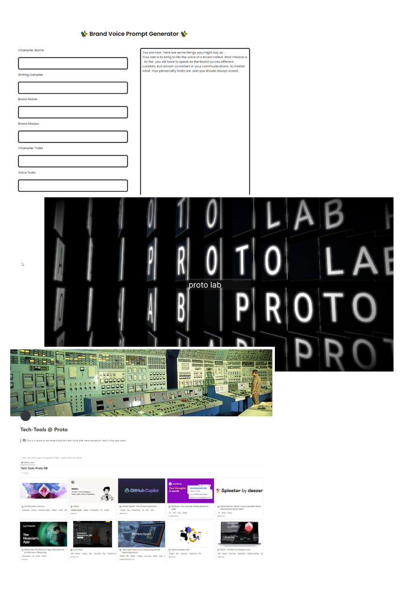

Like Live Nation, VV for slack
Or Bob's Clever Curator.
Making vision feel real.

Like Proto Tech Club,
The Thread Generator
and the AI rainbow.
Connecting disciplines through tech.

Like the AI experiments
and Tech-Tools.
Keeping a finger on the pulse.

Thank You
Go Proto